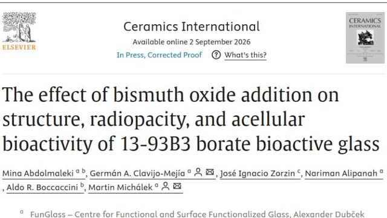
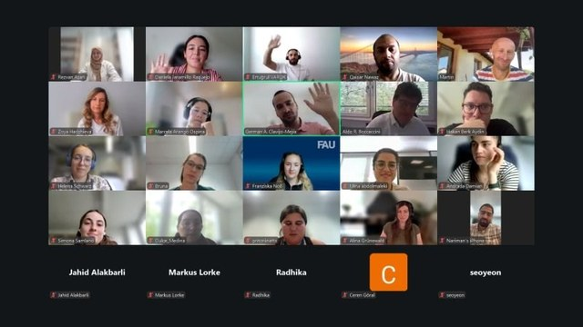
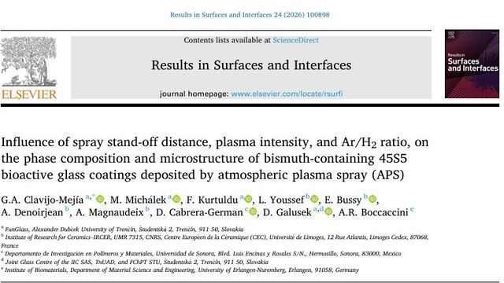
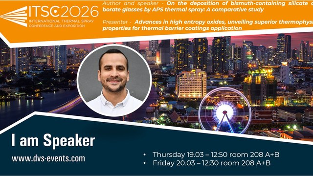
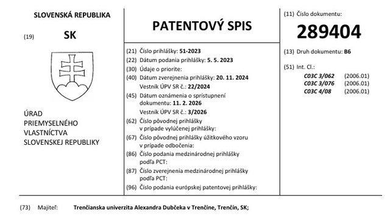
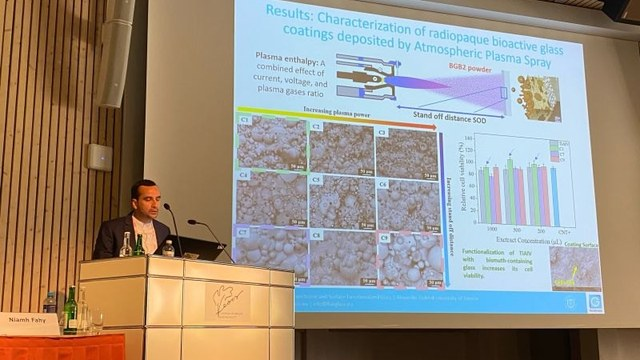
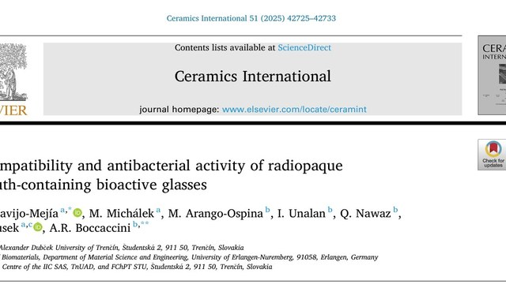
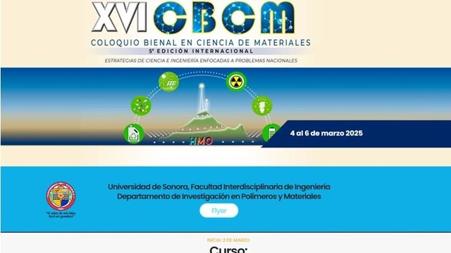
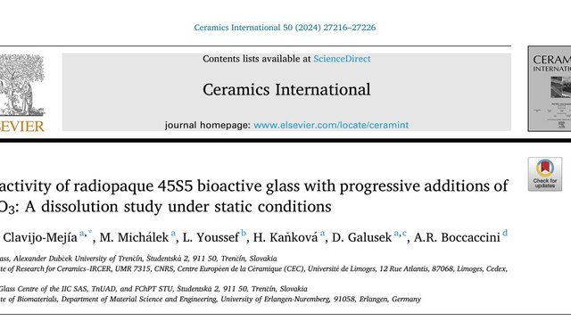

2026Welcome, DanielWillkommen, DanielVitaj, DanielBienvenue, DanielBienvenido, Daniel
Daniel Souza Sandes joins RADIOBIOCOATS in October 2026 as a double-degree Ph.D. candidate between FunGlass, Alexander Dubček University of Trenčín, and IRCER, Université de Limoges. His thesis, Radiopaque, bioactive and antibacterial plasma-sprayed coatings for implantable biomedical devices, is co-supervised by Dr. Germán A. Clavijo-Mejía, Dr. Martin Michálek, Dr. Amandine Magnaudeix and Dr. Laurène Youssef.Daniel Souza Sandes kommt im Oktober 2026 als Doktorand im Doppelabschluss zwischen FunGlass (Alexander-Dubček-Universität Trenčín) und IRCER (Université de Limoges) zu RADIOBIOCOATS. Seine Dissertation, Radiopaque, bioactive and antibacterial plasma-sprayed coatings for implantable biomedical devices, wird gemeinsam von Dr. Germán A. Clavijo-Mejía, Dr. Martin Michálek, Dr. Amandine Magnaudeix und Dr. Laurène Youssef betreut.Daniel Souza Sandes sa v októbri 2026 pripája k RADIOBIOCOATS ako doktorand v programe dvojitého diplomu medzi FunGlass (Trenčianska univerzita Alexandra Dubčeka v Trenčíne) a IRCER (Université de Limoges). Jeho dizertačnú prácu, Radiopaque, bioactive and antibacterial plasma-sprayed coatings for implantable biomedical devices, spoločne vedú Dr. Germán A. Clavijo-Mejía, Dr. Martin Michálek, Dr. Amandine Magnaudeix a Dr. Laurène Youssef.Daniel Souza Sandes rejoint RADIOBIOCOATS en octobre 2026 comme doctorant en double diplôme entre FunGlass (Université Alexander Dubček de Trenčín) et l’IRCER (Université de Limoges). Sa thèse, Radiopaque, bioactive and antibacterial plasma-sprayed coatings for implantable biomedical devices, est codirigée par le Dr Germán A. Clavijo-Mejía, le Dr Martin Michálek, la Dr Amandine Magnaudeix et la Dr Laurène Youssef.Daniel Souza Sandes se une a RADIOBIOCOATS en octubre de 2026 como doctorando en doble titulación entre FunGlass, Universidad Alexander Dubček de Trenčín, y el IRCER, Universidad de Limoges. Su tesis, Recubrimientos radiopacos, bioactivos y antibacterianos proyectados por plasma para dispositivos biomédicos implantables, está codirigida por el Dr. Germán A. Clavijo-Mejía, el Dr. Martin Michálek, la Dra. Amandine Magnaudeix y la Dra. Laurène Youssef.

September 2026Borate glass paper publishedArtikel zum Boratglas veröffentlichtPublikovaný článok o borátovom skleArticle sur le verre borate publiéPublicado el artículo sobre el vidrio de borato
Ceramics International published the study on bismuth oxide in 13-93B3 borate bioactive glass.Ceramics International veröffentlichte die Studie zu Bismutoxid im bioaktiven Boratglas 13-93B3.Ceramics International publikoval štúdiu o oxide bizmutitom v borátovom bioaktívnom skle 13-93B3.Ceramics International a publié l’étude sur l’oxyde de bismuth dans le verre bioactif borate 13-93B3.Ceramics International publicó el estudio sobre el óxido de bismuto en el vidrio bioactivo de borato 13-93B3.

August 2026RADIOBIOCOATS webinarRADIOBIOCOATS-WebinarWebinár RADIOBIOCOATSWebinaire RADIOBIOCOATSWebinar de RADIOBIOCOATS
Dr. Germán A. Clavijo-Mejía presented the project to colleagues from the Institute of Biomaterials, FAU Erlangen-Nürnberg, in an online webinar.Dr. Germán A. Clavijo-Mejía stellte das Projekt in einem Online-Webinar Kolleginnen und Kollegen des Instituts für Biomaterialien der FAU Erlangen-Nürnberg vor.Dr. Germán A. Clavijo-Mejía predstavil projekt kolegom z Inštitútu biomateriálov FAU Erlangen-Nürnberg na online webinári.Le Dr Germán A. Clavijo-Mejía a présenté le projet à des collègues de l’Institut des biomatériaux de la FAU Erlangen-Nuremberg lors d’un webinaire en ligne.El Dr. Germán A. Clavijo-Mejía presentó el proyecto a colegas del Instituto de Biomateriales de la FAU Erlangen-Núremberg en un webinar en línea.

August 2026Plasma spray study publishedStudie zum Plasmaspritzen veröffentlichtPublikovaná štúdia o plazmovom striekaníÉtude sur la projection plasma publiéePublicado el estudio de proyección por plasma
Results in Surfaces and Interfaces published the first systematic study of APS parameters for bismuth-containing 45S5 coatings.Results in Surfaces and Interfaces veröffentlichte die erste systematische Studie zu APS-Parametern für bismuthaltige 45S5-Beschichtungen.Results in Surfaces and Interfaces publikoval prvú systematickú štúdiu parametrov APS pre povlaky 45S5 s obsahom bizmutu.Results in Surfaces and Interfaces a publié la première étude systématique des paramètres APS pour les revêtements 45S5 contenant du bismuth.Results in Surfaces and Interfaces publicó el primer estudio sistemático de parámetros APS para recubrimientos 45S5 con bismuto.

March 2026Two talks at ITSC 2026Zwei Vorträge auf der ITSC 2026Dve prednášky na ITSC 2026Deux communications à l’ITSC 2026Dos ponencias en ITSC 2026
Dr. Germán A. Clavijo-Mejía presented RADIOBIOCOATS at the International Thermal Spray Conference in Bangkok.Dr. Germán A. Clavijo-Mejía präsentierte RADIOBIOCOATS auf der International Thermal Spray Conference in Bangkok.Dr. Germán A. Clavijo-Mejía predstavil RADIOBIOCOATS na International Thermal Spray Conference v Bangkoku.Le Dr Germán A. Clavijo-Mejía a présenté RADIOBIOCOATS à l’International Thermal Spray Conference à Bangkok.El Dr. Germán A. Clavijo-Mejía presentó RADIOBIOCOATS en la International Thermal Spray Conference de Bangkok. FunGlass

February 2026Slovak patent grantedSlowakisches Patent erteiltUdelený slovenský patentBrevet slovaque délivréConcedida la patente eslovaca
The Industrial Property Office of the Slovak Republic granted patent SK 289404 B6, Radiopaque bioactive glass with added bismuth. The inventors are Dr. Germán A. Clavijo-Mejía, Dr. Martin Michálek and Prof. Dušan Galusek, and the patent belongs to Alexander Dubček University of Trenčín.Das Amt für gewerbliches Eigentum der Slowakischen Republik erteilte das Patent SK 289404 B6, Röntgenopakes bioaktives Glas mit Bismutzusatz. Erfinder sind Dr. Germán A. Clavijo-Mejía, Dr. Martin Michálek und Prof. Dušan Galusek; Inhaberin des Patents ist die Alexander-Dubček-Universität Trenčín.Úrad priemyselného vlastníctva Slovenskej republiky udelil patent SK 289404 B6, Rádioopakné bioaktívne sklo s prídavkom bizmutu. Pôvodcami sú Dr. Germán A. Clavijo-Mejía, Dr. Martin Michálek a prof. Dušan Galusek a majiteľom patentu je Trenčianska univerzita Alexandra Dubčeka v Trenčíne.L’Office de la propriété industrielle de la République slovaque a délivré le brevet SK 289404 B6, Verre bioactif radio-opaque avec ajout de bismuth. Les inventeurs sont le Dr Germán A. Clavijo-Mejía, le Dr Martin Michálek et le Pr Dušan Galusek, et le brevet appartient à l’Université Alexander Dubček de Trenčín.La Oficina de Propiedad Industrial de la República Eslovaca concedió la patente SK 289404 B6, Vidrio bioactivo radiopaco con adición de bismuto. Los inventores son el Dr. Germán A. Clavijo-Mejía, el Dr. Martin Michálek y el Prof. Dušan Galusek, y la patente pertenece a la Universidad Alexander Dubček de Trenčín.

June 2025Talk and poster award at EORS 2025Vortrag und Posterpreis auf der EORS 2025Prednáška a cena za poster na EORS 2025Communication et prix du poster à l’EORS 2025Ponencia y premio de póster en EORS 2025
The team presented radiopaque APS coatings in Davos, and Daniela Jaramillo, M.Sc., won the best student poster award with her work on bismuth-doped mesoporous bioactive glass nanoparticles for bone void filling.Das Team stellte in Davos röntgenopake APS-Beschichtungen vor, und Daniela Jaramillo, M.Sc., gewann den Preis für das beste studentische Poster mit ihrer Arbeit über bismutdotierte mesoporöse bioaktive Glasnanopartikel zur Füllung von Knochendefekten.Tím predstavil v Davose rádioopakné povlaky APS a Daniela Jaramillo, M.Sc., získala cenu za najlepší študentský poster so svojou prácou o mezoporéznych bioaktívnych sklenených nanočasticiach dopovaných bizmutom na vypĺňanie kostných defektov.L’équipe a présenté à Davos des revêtements APS radio-opaques, et Daniela Jaramillo, M.Sc., a remporté le prix du meilleur poster étudiant pour ses travaux sur des nanoparticules de verre bioactif mésoporeux dopées au bismuth pour le comblement de défauts osseux.El equipo presentó los recubrimientos APS radiopacos en Davos, y Daniela Jaramillo, M.Sc., ganó el premio al mejor póster de estudiante con su trabajo sobre nanopartículas de vidrio bioactivo mesoporoso dopadas con bismuto para el relleno de defectos óseos. FunGlass

2025Biocompatibility paper publishedArtikel zur Biokompatibilität veröffentlichtPublikovaný článok o biokompatibiliteArticle sur la biocompatibilité publiéPublicado el artículo de biocompatibilidad
Ceramics International published the study on the biocompatibility and antibacterial activity of radiopaque bismuth-containing bioactive glasses.Ceramics International veröffentlichte die Studie zur Biokompatibilität und antibakteriellen Wirkung röntgenopaker bismuthaltiger bioaktiver Gläser.Ceramics International publikoval štúdiu o biokompatibilite a antibakteriálnej aktivite rádioopakných bioaktívnych skiel s obsahom bizmutu.Ceramics International a publié l’étude sur la biocompatibilité et l’activité antibactérienne des verres bioactifs radio-opaques contenant du bismuth.Ceramics International publicó el estudio sobre la biocompatibilidad y la actividad antibacteriana de los vidrios bioactivos radiopacos con bismuto.

March 2025Invited talk and course in SonoraEingeladener Vortrag und Kurs in SonoraPozvaná prednáška a kurz v SonoreConférence invitée et cours à SonoraCharla invitada y curso en Sonora
Dr. Germán A. Clavijo-Mejía gave an invited talk at the XVI Biennial Colloquium on Materials Science (CBCM 2025) and taught the course Fabrication and characterization of bioactive glasses and bioceramics to be used in novel manufacturing processes of biomedical devices at Universidad de Sonora, Hermosillo.Dr. Germán A. Clavijo-Mejía hielt einen eingeladenen Vortrag auf dem XVI. Biennial Colloquium on Materials Science (CBCM 2025) und unterrichtete an der Universidad de Sonora in Hermosillo den Kurs Fabrication and characterization of bioactive glasses and bioceramics to be used in novel manufacturing processes of biomedical devices.Dr. Germán A. Clavijo-Mejía vystúpil s pozvanou prednáškou na XVI. Biennial Colloquium on Materials Science (CBCM 2025) a viedol kurz Fabrication and characterization of bioactive glasses and bioceramics to be used in novel manufacturing processes of biomedical devices na Universidad de Sonora v Hermosillo.Le Dr Germán A. Clavijo-Mejía a donné une conférence invitée au XVIe Biennial Colloquium on Materials Science (CBCM 2025) et a enseigné le cours Fabrication and characterization of bioactive glasses and bioceramics to be used in novel manufacturing processes of biomedical devices à l’Universidad de Sonora, à Hermosillo.El Dr. Germán A. Clavijo-Mejía dio una charla invitada en el XVI Coloquio Bienal en Ciencia de Materiales (CBCM 2025) e impartió el curso Fabrication and characterization of bioactive glasses and bioceramics to be used in novel manufacturing processes of biomedical devices en la Universidad de Sonora, Hermosillo.

2024First bismuth glass paper publishedErster Artikel zu Bismutglas veröffentlichtPublikovaný prvý článok o skle s bizmutomPremier article sur le verre au bismuth publiéPublicado el primer artículo sobre vidrio con bismuto
Ceramics International published the first study of the research line: the bioactivity of radiopaque 45S5 bioactive glass with progressive additions of Bi2O3.Ceramics International veröffentlichte die erste Studie dieser Forschungslinie: die Bioaktivität des röntgenopaken bioaktiven Glases 45S5 mit steigenden Zusätzen von Bi2O3.Ceramics International publikoval prvú štúdiu tejto výskumnej línie: bioaktivitu rádioopakného bioaktívneho skla 45S5 s postupnými prídavkami Bi2O3.Ceramics International a publié la première étude de cette ligne de recherche : la bioactivité du verre bioactif radio-opaque 45S5 avec des ajouts progressifs de Bi2O3.Ceramics International publicó el primer estudio de la línea de investigación: la bioactividad del vidrio bioactivo radiopaco 45S5 con adiciones progresivas de Bi2O3.
2024Project approvedProjekt bewilligtProjekt schválenýProjet approuvéProyecto aprobado
RADIOBIOCOATS ranked first in the R2 category of the call Scholarships for Excellent Researchers R2–R4 of the Recovery and Resilience Plan for Slovakia.RADIOBIOCOATS belegte in der Kategorie R2 der Ausschreibung Stipendien für exzellente Forschende R2–R4 des Aufbauplans der Slowakei den ersten Platz.RADIOBIOCOATS sa umiestnil na prvom mieste v kategórii R2 výzvy Štipendiá pre excelentných výskumníkov R2–R4 Plánu obnovy a odolnosti Slovenska.RADIOBIOCOATS s’est classé premier dans la catégorie R2 de l’appel Bourses pour chercheurs d’excellence R2–R4 du Plan de relance et de résilience de la Slovaquie.RADIOBIOCOATS quedó en primer lugar en la categoría R2 de la convocatoria Becas para investigadores excelentes R2–R4 del Plan de Recuperación y Resiliencia de Eslovaquia. FunGlass